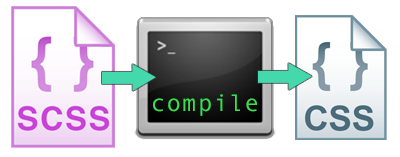

https://jtcoders.github.io/sass
$brandColor: #f90000;
$accentColor: #fff;
header {
background-color: $brandColor;
color: $accentColor;
}
header a { color: $accentColor; }header {
background-color: $brandColor;
color: $accentColor;
a {
color: $accentColor;
}
}@mixin visually-hidden {
text-indent: 100%;
white-space: nowrap;
overflow: hidden;
}
.image-replace {
@include visually-hidden;
background: url(logo.png) no-repeat;
}
How Sass compiles into CSS
You should have installed Sass on your computer prior to this workshop.
Check if Sass is installed:
gem list sass
You should see something like this:
# *** LOCAL GEMS ***
# sass (3.3.4)
If you don't have Sass installed, move to another computer, or you can use Sassmeister for now.
We need to structure our stylesheets before we can compile them.
.scss file extension<head> to point to your /css/ folder.Check out your index.html file in a browser. Looks funky, yes?
We need to compile our .scss (Sass) files to make the CSS work in the browser.
First, navigate via the command line to your /stylesheets directory in the "practice" folder.
Then type:
$ sass --watch scss:cssLet's break this command down - you're going to use it *a lot*!
$ sass --watch scss:css--watch tells Sass to look for changes to our .scss files, and to compile them to css if they have updates.
The scss bit is the folder where our .scss files live. We edit these files only.
The css part is the folder where our .css files will be. These files are the compiled output of our Sass, and are only created when we run the above command.
Sass input:
header {
color: black;
nav {
background: red;
a { color: white; }
}
CSS output:
header { color: black; }
header nav { background: red; }
header nav a { color: white; }Sass input:
nav {
background: red;
a {
color: white;
&:hover { text-decoration: underline; }
}
}
CSS output:
nav { background: red; }
nav a { color: white; }
nav a:hover { text-decoration: underline; }Sometimes you want to reuse a value for a style - you use them frequently, they're hard to type or remember, such as
#2a79afGeorgia, Times, "Times New Roman", serif;1.667emVariables with Sass let us reuse values more than once, while only defining them in one place
//define using dollar sign
$brandColor: #f90000;
$mainTextcolor: #fff;
$accentColor: #ccc;To create a variable you need a dollar sign before the name of your variable, and a colon: to give it a value
Note that in Sass files, you can comment out a line with // two slashes
$brandColor: #f90000; // red
$mainTextcolor: #fff; // white
$accentColor: #ccc; // greyheader {
color: $mainTextColor;
background-color: $brandColor;
}
.content {
color: $mainTextColor;
background-color: $accentColor;
}
footer {
color: $accentColor;
background-color: $brandColor;
}Variables are easy to change if you keep them all in one stylesheet, and update or add to the styles as needed
// Let's define some variables
// Colors
$favoriteColor: #2a79af;
$anotherColor: #f05b62;
// Fonts
$favoriteFont: Papyrus, fantasy;
$aPracticalFont: "Trebuchet MS", "Lucida Grande", "Lucida Sans Unicode", "Lucida Sans", Tahoma, sans-serif;
// Font sizes
$aNiceBigFontSize: 16px;
$finePrint: 10px;
$giantLogo: 36px;
// Margins and Padding
$defaultMargin: 15px;
$defaultPadding: $defaultMargin;
@import "_utilities";
With CSS you have to be explicit about everything, including numbers. With Sass, you can write math to calculate numbers for you:
| + | Addition |
| - | Subtraction |
| * | Multiplication |
| / | Division* |
*division is special, check the documentation link for why and how
Sass input:
$layoutWidth: 960px;
#sidebar {
width: $layoutWidth/3;
}
CSS output:
#sidebar {
width: 320px;
}Sass input:
$layoutWidth: 960px;
$defaultPadding: 16px;
#main {
padding: $defaultPadding;
width: $layoutWidth - $defaultPadding*2;
}
CSS output:
#main {
padding: 16px;
width: 928px;
}$layoutWidth: 960px;
$navWidth: $layoutWidth/3;
footer {
width: ($layoutWidth - 20px);
}Color functions are built-in to Sass. They let you alter existing color values. This is the lighten function:
Sass input:
$linkColor: #000;
$linkShadow: lighten(#000, 40%);
a {
color: $linkColor;
text-shadow: $linkShadow;
}
CSS output:
a {
color: #000;
text-shadow: #666;
}Example of output style
This is the darken function:
Sass input:
$background: #ff0000; // red
$text: darken($background,50%);
body {
color: $text;
background: $background;
}
CSS output:
body {
color: #990000;
background: #ff0000;
}Example of output style
This is the grayscale function:
Sass input:
$background: #ff0000; // red
$text: darken($background,50%);
body {
background: grayscale(#f00);
color: grayscale(darken(#f00, 50%));
}
CSS output:
body {
background: #000;
color: #808080;
}Example of output style
lighten(#000, 20%)
darken(#eee, 30%)
grayscale(#2a79af)
saturate(#2a79af, 40%)
invert(#2a79af)Traditional CSS comments are downloaded by the user. With Sass, we can specify whether comments are left in the final CSS code or are only visible to the developer:
Sass input:
/* Multiline comments will appear
in the final CSS file */
//This single-line comment won't
a { color: blue; }
CSS output:
/* Multiline comments will appear
in the final CSS file */
a { color: blue; }@media bubblingWe can nest media queries directly into style rules:
Sass input:
.sidebar {
width: 100%;
@media (min-width: 450px) {
width: 33%;
}
}CSS output:
.sidebar {
width: 100%;
}
@media (min-width: 450px) {
.sidebar {
width: 33%;
}
}Mixins are really just a collection of one or more styles that are reusable, like variables are reusable values
Sass input:
@mixin dropshadow($text) {
color: $text;
text-shadow: 2px 4px lighten($text, 50%);
}
p {
@include dropshadow(black);
}
CSS output:
p {
color: black;
text-shadow: 2px 4px #808080;
}Example of output style
@contentWe can create mixins that contain other text, by holding a place for it with @content:
Mixin:
@mixin at-least($breakpoint) {
@media only screen and (min-width: $breakpoint) { @content; }
}
Usage:
.sidebar {
width: 100%;
@include at-least(450px) {
width: 33%;
}
}
Try it in Sassmeister!
Mixins can take multiple arguments:
Mixin:
@mixin between($bp1,$bp2) {
@media only screen and (min-width: $bp1) and (max-width: $bp2 - 0.1) {
@content;
}
}
Usage:
.nav-bar {
font-size: 1.125em;
@include between(33em, 44em) {
font-size: 1.5em;
}
Try it in Sassmeister!
We can also specify default values for arguments, for next-level laziness (a good thing):
Mixin:
@mixin top-bottom-gradient($color1, $color2: transparent) {
background-image: linear-gradient($color1, $color2, $color1);
}
Usage:
.vignette {
@include top-bottom-gradient(black);
}
CSS output:
.vignette {
background-image: linear-gradient(black, transparent, black);
}
Default arguments can be variables—
even other arguments!
Mixin:
@mixin size($width, $height: $width) {
width: $width;
height: $height;
}
Usage:
.box {
@include size(450px);
}
CSS output:
.box {
width: 450px;
height: 450px;
}
@extend?If a mixin doesn't require an argument, we can use @extend instead. However, this can have unexpected consequences, and many recommend using mixins instead.
Using @extend:
.headline {
font-size: 2em;
font-weight: bold;
}
.lead-story-headline {
@extend .headline;
text-decoration: underline;
text-transform: uppercase;
}Using @mixin:
@mixin headline-base {
font-size: 2em;
font-weight: bold;
}
.headline { @include headline-base };
.lead-story-headline {
@include headline-base;
text-decoration: underline;
text-transform: uppercase;
}Try both versions in Sassmeister!
@mixin name {
property: value;
}
@mixin example($argument) {
property: value;
property: $argument;
}
With some styles, we may want to use variables right next to text. For example, consider this mixin:
@mixin rotate($position) {
transform: rotate(-5deg);
transform-origin: $position;
}
.rotated {
@include rotate(bottom left);
}What if we replaced the 5 with a variable?
Try it in Sassmeister.
@mixin rotate($degree, $position) {
transform: rotate(#{$degree}deg);
transform-origin: $position;
}
.rotated {
@include rotate(-5, bottom left);
}Sass has logic statements that you can use to create conditionals. They are @if, @else if, and @else
@mixin opacity($value: 0.5) {
@if $value == transparent {
opacity: 0;
} @else if $value == opaque {
opacity: 1;
} @else {
opacity: $value;
}
}
@include opacity(transparent);
Rewrite your existing mixins to use if/else if statements, so that they output different CSS depending on different arguments.
@mixin arrow($direction: right) {
@if $direction == right {
//right arrow styles
}
@else if $direction == left {
// left arrow styles
}
}
With @for loops, you can make Sass write your classes and styles for you.
Sass code:
@for $i from 1 through 3 {
.column-#{$i} { width: 2em * $i; }
}
CSS output:
.column-1 {
width: 2em;
}
.column-2 {
width: 4em;
}
.column-3 {
width: 6em;
}@for $i from 1 through 3 {
.column-#{$i} { width: 2em * $i; }
}
With @each, you can loop through a list of item and create styles for each item in the list.
Sass code:
@each $icon in youtube, twitter, facebook {
.icon-$icon {
background-image: url('#{$icon}.png');
}
}
CSS output:
.icon-youtube {
background: url('youtube.png');
}
.icon-twitter {
background: url('twitter.png');
}
.icon-facebook {
background: url('facebook.png');
}@each $woman in ada, grace, frances, barbara, anita, maria {
.#{$woman}-bg {
background-image: url('images/#{$woman}.png');
}
}Just like other languages, Sass has libraries, too!